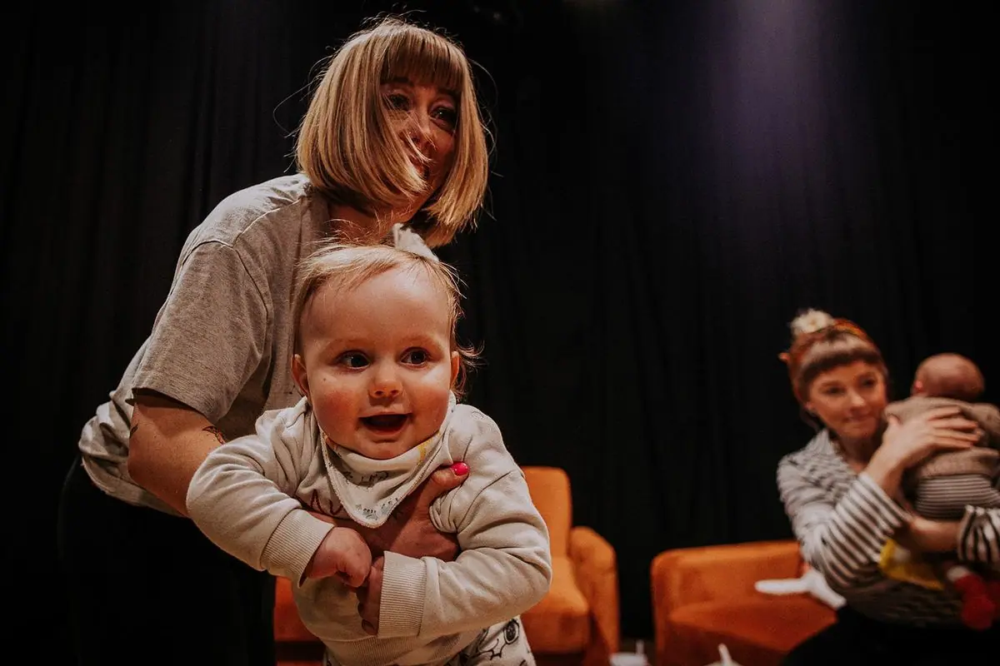
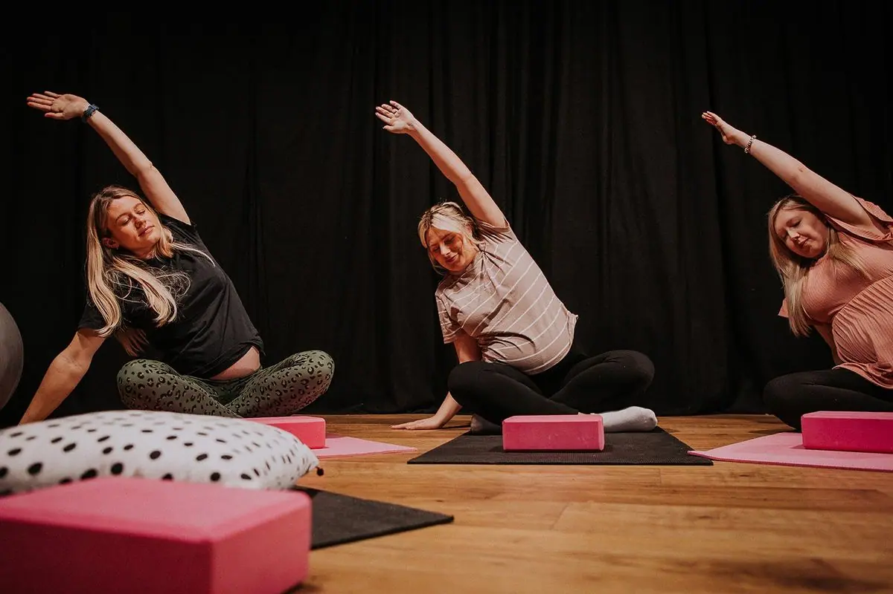
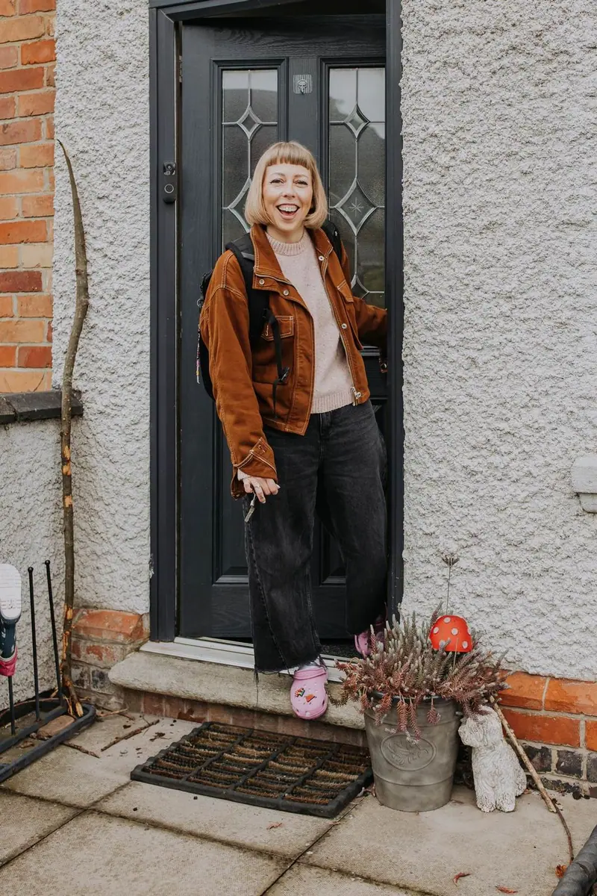

Welcome to
birth‑hood
Hypnobirthing, Doula support and Yoga — helping you feel powerful, prepared and genuinely excited for birth. All pregnancies, all modes of birth, all people.



Hi, I'm Leanne
At birth-hood, I believe every family deserves to enter parenthood feeling informed, supported, connected, and confident. Through education, compassionate care, and community, I help people navigate pregnancy, birth, and beyond in a way that feels right for them.
From Doula support, Hypnobirthing, 3 Step Rewind Traumatic Birth resolution support, and Yoga you're covered (as featured on BBC Radio Leicester).
Based in Leicestershire and covering the Midlands (plus online).
Everything you need for a positive birth
Evidence-based antenatal education using relaxation, breathing and visualisation to help you approach birth with calm confidence.
Learn moreContinuous, compassionate non-medical support before, during and after your birth. Your person in the room — always in your corner.
Learn morePregnancy and Parent & Baby Yoga.Pregnancy and Parent & Baby Yoga. Gentle, evidence-based yoga for all stages of pregnancy and beyond. Nourish your body, calm your mind and build a beautiful community.
Learn moreTrauma-informed support for those processing a difficult birth experience. Your feelings are valid — you don't have to carry them alone.
Learn more
A passionate advocate for positive birth
Hi, I'm Leanne — a certified hypnobirthing practitioner, birth doula and yoga teacher based in NW Leicestershire. Since 2019 I've been helping families across the Midlands and online feel genuinely prepared and excited for birth.
I believe that every person deserves to feel powerful in their birth experience — regardless of how it unfolds. Whether you're planning a home birth, a hospital birth, a caesarean or anything in between, I'm here to give you the knowledge, tools and support you need.
What clients say
We instantly felt at ease and comfortable and thoroughly enjoyed learning about the benefits of Hypnobirthing. We are due to have our first baby in 6 weeks and Leanne helped us to feel nothing but calm and excited for this completely unknown experience coming up.
From my first contact with Leanne we just clicked. She supported me through my concern about fibroids, and gave me some brilliant yoga positions to try when my SPD started. I can't recommend Leanne highly enough, she's a pro at end-to-end care!
We went on an antenatal course last week, and honestly found the two hours spent with Leanne today were much more helpful than the seven hours there!
Free resources to get you started
Download my 20 ready-made birth affirmations, newborn checklist and a free hypnobirthing MP3 — no email required, no strings attached. Plus an ELLE TENS machine discount code!
Follow me on Instagram
@birthhooduk — real moments from my day-to-day work supporting families
Ready to feel excited about your birth?
Book a free 30-minute consultation — no obligation, just a friendly chat.